畜産の現場で報告された事例
日本と海外の現場の記録を、行政の調査、裁判の報告、研究から読みます。
それぞれに地域、時期、資料の種類を付けました。一つの農場で起きた事件、調査に答えた農場の傾向、研究で観察された結果には、それぞれ違う読み方があります。8本の掘り下げ記事に加え、調査台帳に収めた79項目を掲載しています。写真と原資料は各項目から確認できます。
8本の掘り下げ記事
日本・島根県／2023年／行政資料・判決報道
農場で乳牛が蹴られた事案英国・デヴォン／2024年に現場調査／自治体の発表
牛が横になれる乾いた場所がなかった英国・ケンブリッジシャー／2024年／自治体の発表
牛とぶたの世話をめぐる立ち入り調査日本・茨城県／平成26年度／行政調査
鶏が処理場に着くまでに何が起きたかポーランド／2024年発表／飼育研究・記録写真
床の材料と、肉用鶏の足うらの傷デンマーク／2021年発表／商業鶏群の研究
卵を産む鶏の胸の骨を調べた研究日本／令和6年度／農林水産省の実態調査
たまごをうむ にわとりの家日本／2022年ほか／国会会議録・農林水産省資料
たまごをうまない雄のひよこはどうなる？
畜産の現場で記録された79項目
番号は調査台帳に対応します。個別事件、調査で確認された慣行、健康被害、事故、防疫の記録を収録しています。写真には、現場写真・研究写真・関連写真・イメージ写真のいずれかを記しました。
- 日本で確認された事例と慣行
- 海外の選別・飼養・身体への処置
- 輸送・処理・ケアをめぐる記録
- 牛の処置・飼養と国内の現場記録
- 母豚・子豚・出荷豚
- 家きん、ウサギ、ヤギ、羊
- 輸送、と畜、畜産副産物
- 火災・自然災害・防疫・供給網の途絶
日本で確認された事例と慣行
01採卵鶏の雄ひなの殺処分日本・2022年国会等 ／ 生産上の選別
日本の国会答弁と農水省資料が、採卵用鶏のふ化後に雄ひなが選別・殺処分されてきたことを記す。方法別・施設別の国内実施割合はこの資料からは確定できない。

イメージ写真 選別用の容器に密集し、餌や水に届かないひな。飼育・取り扱い上の問題を説明するために構成した場面。制作 Before We Eat。 原資料
02採卵鶏をケージで飼う日本・令和6年度調査 ／ 飼養
農水省調査で、この設問に回答した408件のうち304件がケージ飼養のみ。特に従来型の狭いケージでは、羽ばたき、砂浴び、巣での産卵が制限される。設問の「ケージ」には方式の違いがある。

関連写真 インドネシアの採卵鶏のケージ飼養設備。出典 Rickyandriandra, Kandang Baterai Ayam Layer（Wikimedia Commons、2022年） ／ CC BY-SA 4.0。表示用に縮小・形式変換。 原資料
03鶏の餌を断ち、換羽を促す日本・2025年10月調査 ／ 飼養
産卵をいったん休ませ、その後の産卵に備える方法の一つ。日本養鶏協会の2025年10月調査では、換羽に関する集計対象の鶏の33.2％が絶食方式だった。長引く空腹が問題になる。

イメージ写真 羽を広げにくい過密なケージと羽毛が傷んだ採卵鶏。飼育・取り扱い上の問題を説明するために構成した場面。制作 Before We Eat。 原資料
04ひなのくちばしの一部を取り除く日本・平成26年度調査 ／ 身体への処置
ほかの鶏をつついて傷つける被害を防ぐために行われる。国内調査で実施農場、処置済みのひなを受け入れる農場を確認。痛みと、飼育環境の改善による予防が論点。
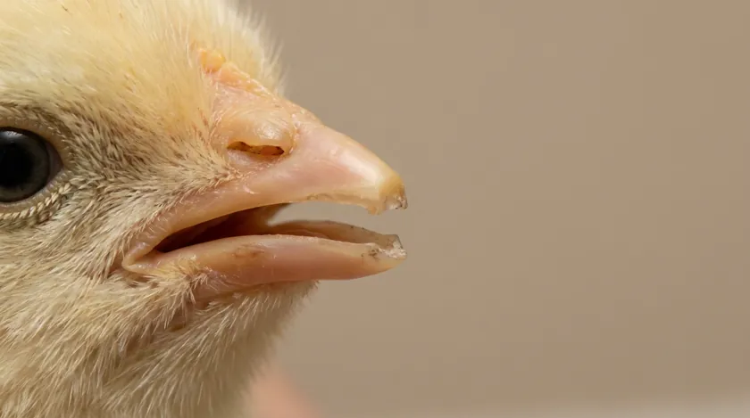
イメージ写真 先端が短く処置されたひなのくちばし。飼育・取り扱い上の問題を説明するために構成した場面。制作 Before We Eat。 原資料
05ブロイラーの足裏に炎症や潰瘍が生じる日本・2012年の研究ほか ／ 健康被害
国内の複数の食鳥処理場・出荷農場を対象とした調査で、足裏の炎症や潰瘍を確認。発生程度には農場・鶏群による差があった。病変だけで故意や予防可能性を判断しない。
研究の記録写真を見る（足うらの傷が写っています）

研究写真 ポーランドの研究で撮影された肉用鶏の足うらの傷を4段階で示す写真と顕微鏡写真。出典 Damaziak ほか（2024年）図2 ／ CC BY 4.0。表示用に形式・解像度を変更。 原資料
06繁殖母豚を一頭用の狭い枠で飼う日本・令和6年度調査 ／ 飼養
妊娠ストールでは母豚が自分で向きを変えにくい。令和6年度の豚の調査では飼養形態に回答した481件のうち、ストールのみが133件、群飼との併用が301件。拘束期間まではこの数字からはわからない。
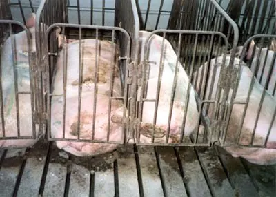
関連写真 繁殖用の母ぶたを一頭ずつ飼う妊娠ストール。出典 Farm Sanctuary, Gestcrate01（Wikimedia Commons） ／ CC BY 1.0。表示用に縮小・形式変換。 原資料
07子豚の尾を切る日本・平成26年度調査 ／ 身体への処置
豚同士の尾かじりによるけがを防ぐ目的で行われる。処置の痛みと、密度・飼料や探索できる材料など、尾かじりの背景を改善する余地がある。
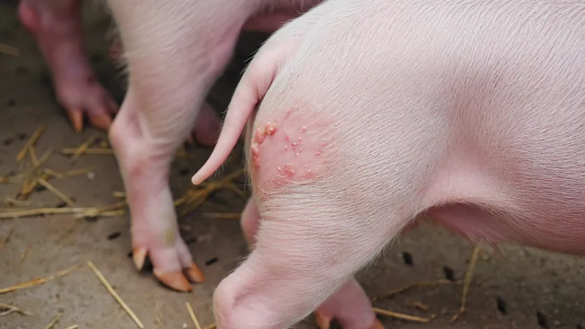
イメージ写真 短く切られた子ぶたの尾の処置跡。飼育・取り扱い上の問題を説明するために構成した場面。制作 Before We Eat。 原資料
08子豚の歯の先を切る・削る日本・平成26年度調査 ／ 身体への処置
母豚の乳頭や同腹の子豚の顔に傷がつくのを防ぐための処置。国内では生後早期の実施が確認される。必要性の判断と、処置自体による痛みや歯の損傷が問題になる。

イメージ写真 口を保定された子ぶたと、短く処置された歯。飼育・取り扱い上の問題を説明するために構成した場面。制作 Before We Eat。 原資料
09雄の子豚を麻酔なしで外科的に去勢する日本・業界の過去の調査 ／ 身体への処置
肉に生じる特有のにおいなどを避ける目的で行う。養豚業界の調査には麻酔を使わない回答がある。調査年で扱いが異なるため、古い割合を現在の全農場に当てはめることはできない。
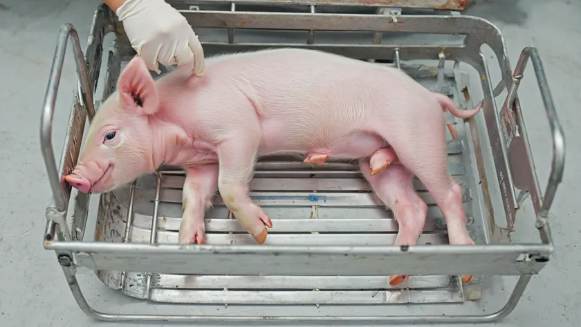
イメージ写真 身体への処置に備えて四肢を固定された子ぶた。飼育・取り扱い上の問題を説明するために構成した場面。制作 Before We Eat。 原資料
10乳牛をつないで飼う日本・令和6年度調査 ／ 飼養
農水省調査で、飼養形態に回答した373件のうち124件が「繋ぎ飼いのみ」。移動や仲間との接触が制限される。つなぐ長さや運動の機会には農場差がある。
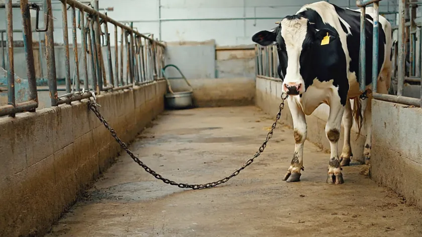
イメージ写真 短い鎖につながれ、敷料のない床で動きが制限される乳牛。飼育・取り扱い上の問題を説明するために構成した場面。制作 Before We Eat。 原資料
11黒毛和種の肥育牛で重いビタミンA欠乏が生じる日本・獣医学症例報告 ／ 健康被害
国内の肥育農家で浮腫などがみられ、報告された4頭のうち3頭が立てなくなった症例がある。欠乏が疑われた症例であり、報告から意図的に発症させたとは言えない。
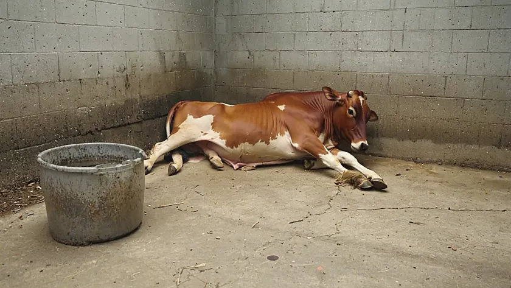
イメージ写真 やせた牛が横たわる、寝床の乏しい囲い。飼育・取り扱い上の問題を説明するために構成した場面。制作 Before We Eat。 原資料
12乳牛を蹴るなどの暴行日本・島根県、2023年発生 ／ 個別の暴力事件
2023年、島根県大田市の農場で起きた事例。農場が従業員の行為を確認し、松江地裁が元従業員に罰金20万円の判決を言い渡した。判決の対象は行為者本人。
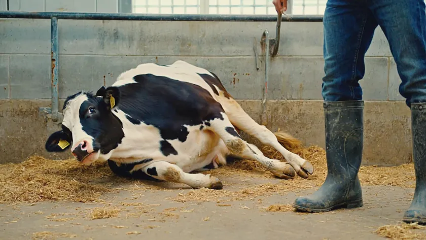
イメージ写真 人の足元で横たわる牛と、乱暴な取り扱いを考える場面。飼育・取り扱い上の問題を説明するために構成した場面。制作 Before We Eat。 原資料


海外の選別・飼養・身体への処置
13乳用牛の雄子牛を幼いうちに殺す英国・NZ等／NZは2020年調査 ／ 生産上の選別
乳を生産できず、肉用に育てる採算も取りにくい子牛が、ごく若いうちに殺される場合がある。肉用に育てる経路もあるため、国・品種・販路を明記したい。

イメージ写真 向きを変えにくい狭い囲いに一頭で隔離された子牛。飼育・取り扱い上の問題を説明するために構成した場面。制作 Before We Eat。 原資料
14乳用ヤギの雄の子を早期に殺す英国の農場訪問報告等 ／ 生産上の選別
乳用ヤギにも、雄の子の育成先が見つからず、農場での早期殺処分が問題になる例がある。卵の生産で生じる雄ひなと同じように、乳の生産でも雄の育成先が課題になる。

イメージ写真 育成先の限られた雄の子ヤギが置かれた、餌の乏しい囲い。飼育・取り扱い上の問題を説明するために構成した場面。制作 Before We Eat。 原資料
15フォアグラ向けに雌のアヒルのひなを選別・殺処分するフランス・上院報告等 ／ 生産上の選別
フランス上院の報告は、フォアグラ向けに雄を用いる生産体系で、雌のひなの一部が性別判明後に殺されたと記す。食肉用の販路や、2024年時点の業界の対応は、あわせて下の資料から確認できる。

イメージ写真 選別用の容器に密集したアヒルのひな。飼育・取り扱い上の問題を説明するために構成した場面。制作 Before We Eat。 原資料
16フォアグラ生産のための強制給餌主に欧州／研究レビュー ／ 給餌
アヒルの肝臓を肥大させる目的で行う。強制給餌、取り扱い、肥大に伴う身体への影響について研究レビューが報告している。

イメージ写真 アヒルの身体を拘束する囲いと強制給餌の場面。飼育・取り扱い上の問題を説明するために構成した場面。制作 Before We Eat。 原資料
17アヒルが頭を水に浸せない環境欧州等・2023年評価等 ／ 飼養
飲水だけを確保しても、水浴びや頭を洗う行動ができない飼養環境がある。羽や目・鼻を清潔に保つ行動が制限される。
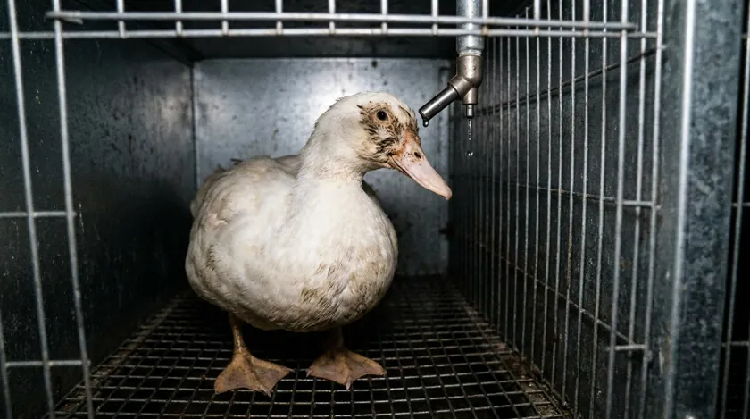
イメージ写真 アヒルが頭を水に浸せない環境を考えるための構成場面。飼育・取り扱い上の問題を説明するために構成した場面。制作 Before We Eat。 原資料
18採卵用ウズラの集団ケージ飼養欧州・2023年評価 ／ 飼養
EFSAによると、欧州では食卵用ウズラを飼う農場の多くが集団ケージを使用。限られた空間では隠れる、砂浴びをするなどの行動が難しい。

イメージ写真 立つ・羽を広げる行動が制限される低いケージのウズラ。飼育・取り扱い上の問題を説明するために構成した場面。制作 Before We Eat。 原資料
19七面鳥の足指の先を処置する欧州・加盟国調査 ／ 身体への処置
群れの中での引っかき傷などを予防する目的。ひなに施す身体処置に伴う痛みが問題となる。 EFSAのネットワーク調査では、この処置の実施を2か国が報告。

イメージ写真 先端への処置が行われた七面鳥の足指。飼育・取り扱い上の問題を説明するために構成した場面。制作 Before We Eat。 原資料
20七面鳥のくちばしの上の肉垂を切除する欧州・加盟国調査 ／ 身体への処置
七面鳥特有の肉垂をひなの時期に除去する慣行がある。けがを予防するために別の組織を傷つける必要があるかが論点。 EFSAのネットワーク調査では、この処置の実施を2か国が報告。
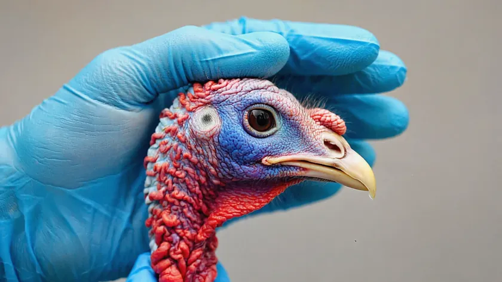
イメージ写真 七面鳥のくちばしの上の肉垂を切除するを考えるための構成場面。飼育・取り扱い上の問題を説明するために構成した場面。制作 Before We Eat。 原資料
21急速に体重が増える肉用鶏を育種する英国・2008年調査報告等 ／ 育種・健康被害
ブロイラーで体の成長に脚が追いつかず、歩行困難などが生じる問題が報告されている。品種、成長速度、飼育環境が関係する。
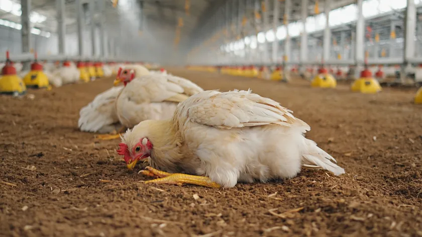
イメージ写真 湿った敷料の上で脚を開き、立ち上がりにくい肉用鶏。飼育・取り扱い上の問題を説明するために構成した場面。制作 Before We Eat。 原資料
22ブロイラーの親鶏に長期間の給餌制限を行う欧州・2023年評価 ／ 給餌
急成長する系統の親鶏では、過体重や繁殖上の問題を避けるため餌の量を制限する。その結果、親鶏が長く空腹を感じることが問題になる。

イメージ写真 餌のない給餌器をつつく親鶏。飼育・取り扱い上の問題を説明するために構成した場面。制作 Before We Eat。 原資料
23採卵鶏の胸の骨に骨折が多発するデンマーク・2021年報告 ／ 健康被害
デンマークの商業鶏群の調査で、産卵期間の終わりに多数の竜骨骨折が確認された。ケージ以外の方式でも発生し、骨折を一律に乱暴な扱いと結びつけることはできない。

イメージ写真 羽毛の脱落した鶏と、汚れた敷料のある過密な鶏舎。飼育・取り扱い上の問題を説明するために構成した場面。制作 Before We Eat。 原資料
24分娩前後の母豚を細い枠に固定する欧州・2022年評価 ／ 飼養
子豚が母豚の体の下敷きになるのを防ぐための分娩柵。母豚が向きを変え、巣づくりをし、子豚に近づく行動が制限される。

イメージ写真 細い柵に拘束された母ぶたと乳頭から離れて倒れた子ぶた。飼育・取り扱い上の問題を説明するために構成した場面。制作 Before We Eat。 原資料
25乳牛と子牛を出産後まもなく引き離す欧州・2023年評価 ／ 母子の飼養
酪農の一部の飼養方式では、母子が一緒に過ごす時間がごく短い。母子の接触、哺乳、社会行動の機会が論点で、別れの反応は時期や方法でも変わる。
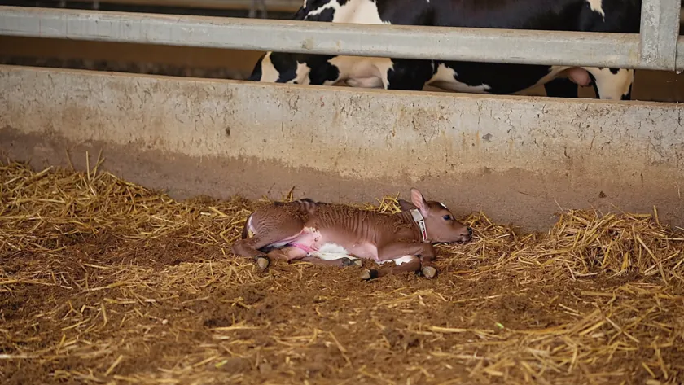
イメージ写真 母牛から柵で離され、汚れた敷料で休む子牛。飼育・取り扱い上の問題を説明するために構成した場面。制作 Before We Eat。 原資料
26子牛を個別の囲いで育てる欧州・2023年評価 ／ 飼養
感染症対策や個体管理を目的に行われる。仲間への接触、遊びや社会行動が制限され、囲いの広さ、隣の牛との接触、期間が影響する。

イメージ写真 子牛を個別の囲いで育てるを考えるための構成場面。飼育・取り扱い上の問題を説明するために構成した場面。制作 Before We Eat。 原資料
27白い子牛肉を作るために鉄を制限する欧州・2023年評価 ／ 給餌
肉色を淡くする商品上の目的で、子牛の飼料中の鉄を低く抑える例がある。貧血リスクがあり、売れる肉色と動物の健康が直接ぶつかる事例。
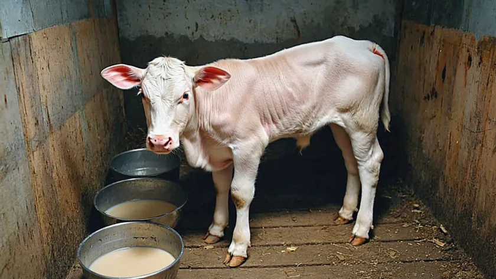
イメージ写真 白い子牛肉を作るために鉄を制限するを考えるための構成場面。飼育・取り扱い上の問題を説明するために構成した場面。制作 Before We Eat。 原資料
28子牛肉生産で繊維質の餌を少なくする欧州・2023年評価 ／ 給餌
粗飼料の量や形状が足りないと、牛本来の反すうや採食行動が十分にできない。上の鉄制限と関連するが、こちらの焦点は消化・行動にある。
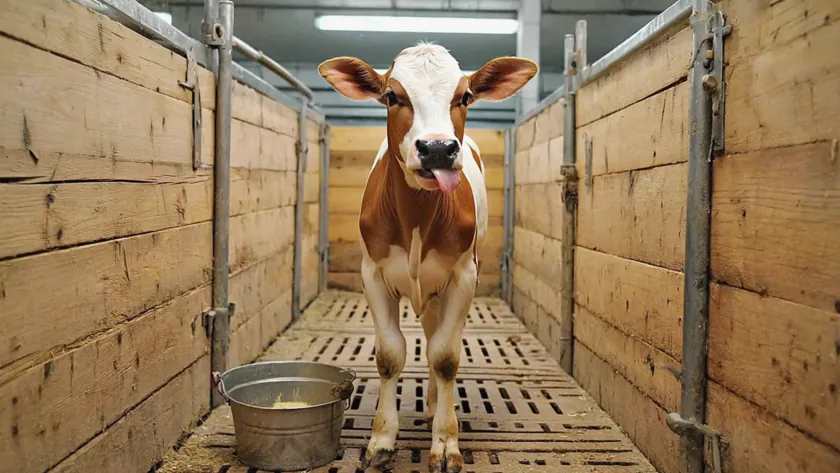
イメージ写真 子牛肉生産で繊維質の餌を少なくするを考えるための構成場面。飼育・取り扱い上の問題を説明するために構成した場面。制作 Before We Eat。 原資料
29食肉用ウサギを従来型の狭い金網ケージで飼う欧州・2020年評価 ／ 飼養
欧州の複数の生産体系を比較した評価では、この方式は動きの制限が大きい。跳ぶ、立ち上がる、体を伸ばすための空間が問われる。

イメージ写真 足を休める場所のない金網床に閉じ込められたウサギ。飼育・取り扱い上の問題を説明するために構成した場面。制作 Before We Eat。 原資料
30羊の尻周辺の皮膚を切除する豪州・2024年の業界資料 ／ 羊毛生産
豪州の一部の羊でハエの幼虫による被害を予防するために行われるミュールジング。体への処置の痛みと防虫の必要性を併せて考える。主に羊毛に関係する畜産の例。
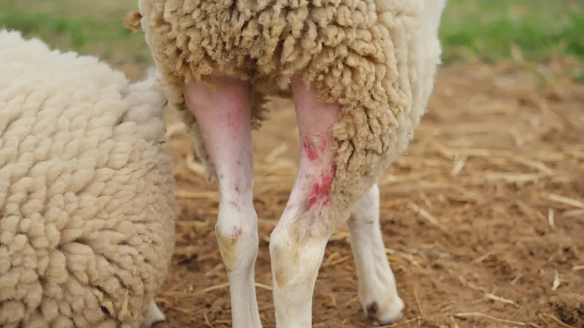
イメージ写真 羊の尻周辺に残るミュールジング後の瘢痕。飼育・取り扱い上の問題を説明するために構成した場面。制作 Before We Eat。 原資料
輸送・処理・ケアをめぐる記録
31暑い環境での生体輸送で羊が大量死する豪州発・2017年 ／ 輸送中の死亡
2017年、豪州を出たAwassi Express号の23日間の航海で、熱ストレスにより2,400頭を超える羊が死亡したと独立監察報告が記録。
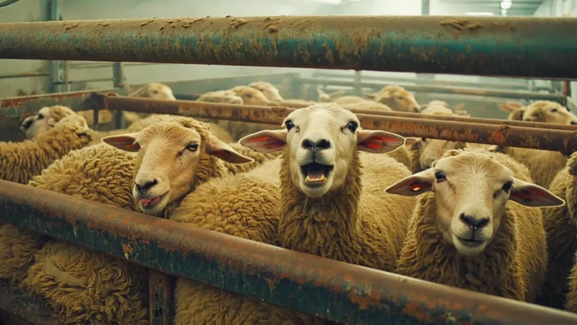
イメージ写真 蒸し暑い船内に密集し、口を開いて呼吸する羊。飼育・取り扱い上の問題を説明するために構成した場面。制作 Before We Eat。 原資料
32離乳前の子牛を長距離輸送する欧州・2022年評価 ／ 輸送
欧州では若い子牛を育成地へ国境を越えて運ぶ事例がある。哺乳が必要な時期の長い移動には空腹、疲労、異なる群れとの混合が関わる。
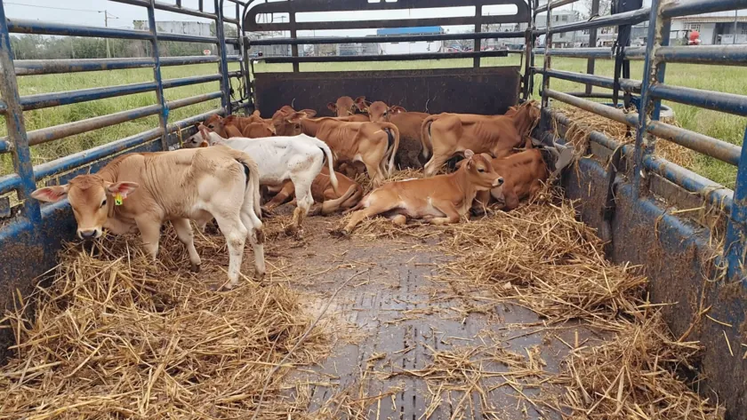
イメージ写真 汚れた輸送車内で密集し、一部が横たわる子牛。飼育・取り扱い上の問題を説明するために構成した場面。制作 Before We Eat。 原資料
33英国の処理場で豚を高濃度二酸化炭素で気絶させるイングランド・ウェールズ、2024年調査週 ／ と畜
2024年2月のイングランド・ウェールズの調査週で豚の90％に実施。意識を失う前の忌避反応と呼吸の苦しさが問題になる。
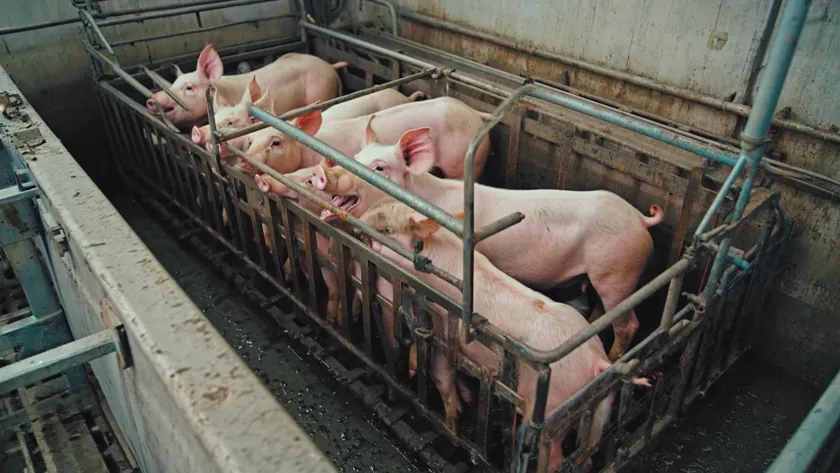
イメージ写真 高濃度二酸化炭素の設備内で口を開けるぶた。飼育・取り扱い上の問題を説明するために構成した場面。制作 Before We Eat。 原資料
34家きんを逆さにつるしてから電気で気絶させるイングランド・ウェールズ、2024年調査週 ／ 食鳥処理
英国の処理場調査で電気水浴方式の使用を確認。意識を失う前につるす段階の痛み・恐怖が論点になる。すべての処理場がこの方式を使うわけではない。
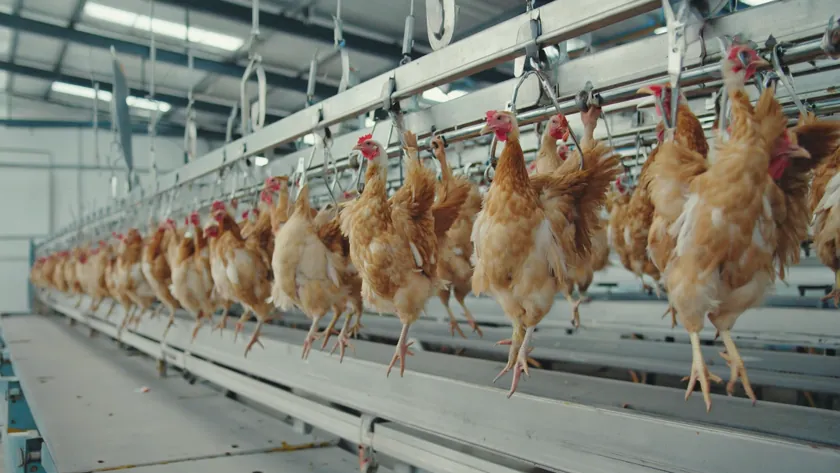
イメージ写真 処理工程で脚を固定され、逆さにつられた鶏。飼育・取り扱い上の問題を説明するために構成した場面。制作 Before We Eat。 原資料
35事前に気絶させずに羊などをと畜するイングランド・ウェールズ、2024年調査週 ／ と畜
イングランド・ウェールズの調査で実施を確認。意識が失われるまでの痛みが論点。宗教的な食肉でも事前に気絶させる例があり、記事では実際の処理方法を明示する。

イメージ写真 と畜に向けて頭と身体を保定された羊。飼育・取り扱い上の問題を説明するために構成した場面。制作 Before We Eat。 原資料
36立てなくなった牛を処理場で不適切に扱う米国・2008年刑事報道、2013年民事和解 ／ 個別事件
カリフォルニア州の食肉処理場で歩けない牛を乱暴に扱った事件。2008年に従業員の一人への有罪の刑が報じられた。会社等を相手にした別の民事手続は2013年に和解している。

イメージ写真 汚れた搬入通路で倒れ、自力で立てない牛。飼育・取り扱い上の問題を説明するために構成した場面。制作 Before We Eat。 原資料
37ペットフード用処理施設で子牛を乱暴に扱うニュージーランド・2015年発生 ／ 個別事件・ペットフード
ニュージーランドのTe Kauwhataで、酪農由来の子牛111頭の扱いをめぐり、作業者が10件の訴因を認めた。人向けの食肉処理場とは異なる流通先で起きた事案。
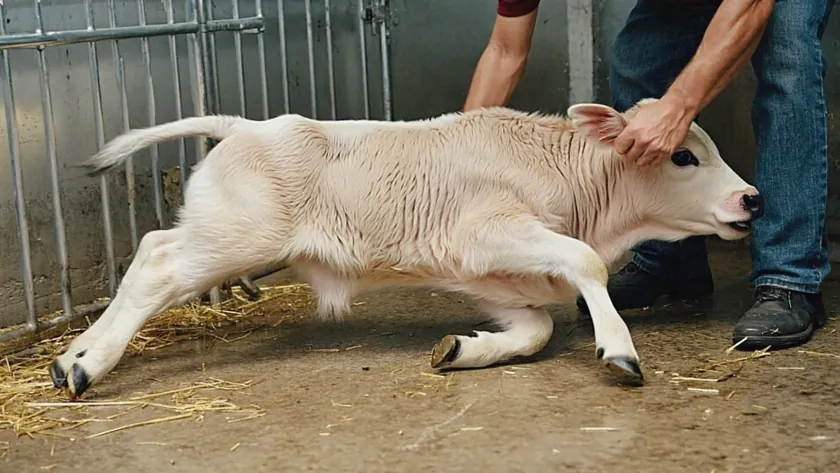
イメージ写真 ペットフード用処理施設で子牛を乱暴に扱うを考えるための構成場面。飼育・取り扱い上の問題を説明するために構成した場面。制作 Before We Eat。 原資料
38極度に衰弱した子牛への必要な処置を怠るニュージーランド・2020年の農場訪問 ／ 個別事件・ケアの不履行
ニュージーランドのカンタベリーで、体に傷があり著しく衰弱した子牛について、苦痛を終わらせる処置を取らなかった農場経営者に罰金。病気の存在と、そのまま苦痛を長引かせた行為を区別できる事例。
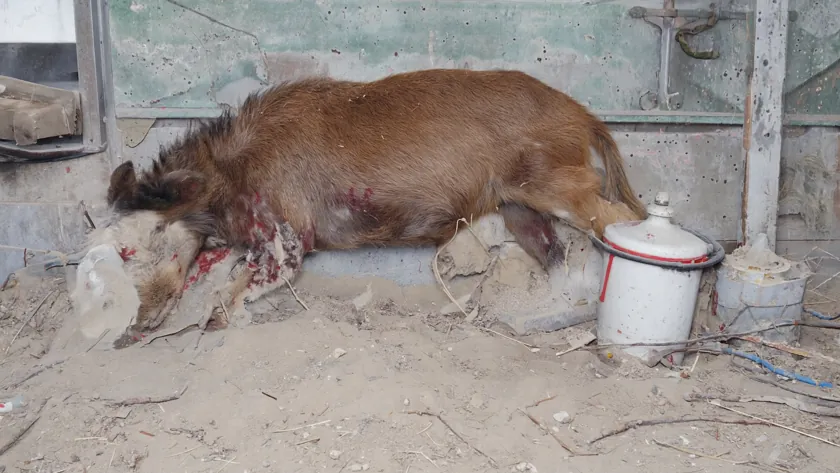
イメージ写真 極度に衰弱した子牛への必要な処置を怠るを考えるための構成場面。飼育・取り扱い上の問題を説明するために構成した場面。制作 Before We Eat。 原資料
牛の処置・飼養と国内の現場記録
39牛の除角の際に麻酔を使わない日本・平成26年度 ／ 業界調査
除角時に麻酔を使わないと回答した農場が、乳用牛で372件、肉用牛で358件あった。調査当時の回答で、現在の使用率は別途確認が必要。

イメージ写真 子牛の頭に残る除角処置の跡。飼育・取り扱い上の問題を説明するために構成した場面。制作 Before We Eat。 原資料
40乳牛の尾を切る日本・平成26年度 ／ 業界調査
酪農家への質問票で、農場内での断尾の実施を確認。尾を使ってハエを払う行動と処置の痛みが論点。

イメージ写真 過去の処置で短くなった乳牛の尾。飼育・取り扱い上の問題を説明するために構成した場面。制作 Before We Eat。 原資料
41肉用牛に鼻環を装着する日本・平成26年度 ／ 業界調査
回答農場のうち577件が、初めて鼻環を装着する処置を自場で行うと回答。装着時の痛みと、その後の誘導時の扱いを分けて評価する。
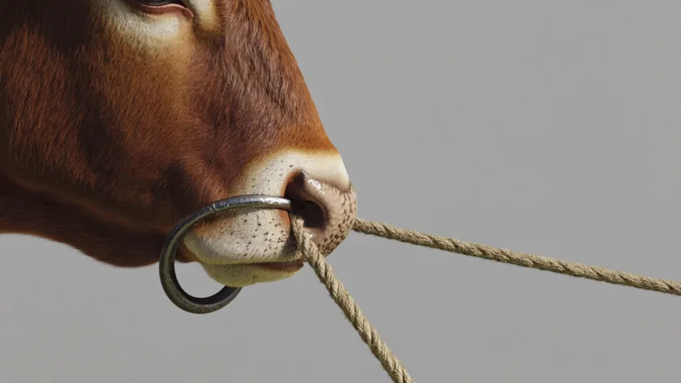
イメージ写真 鼻環につながる綱で頭の向きが引かれる牛。飼育・取り扱い上の問題を説明するために構成した場面。制作 Before We Eat。 原資料
42雄の肉用牛の外科的去勢日本 ／ 業界調査・研究
国内の飼養調査と若齢去勢の研究に実施記録がある。月齢、鎮痛の方法、術後の経過で負担が変わる。
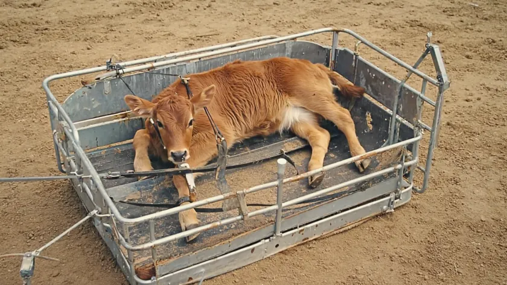
イメージ写真 身体への処置に備えて保定された雄の子牛。飼育・取り扱い上の問題を説明するために構成した場面。制作 Before We Eat。 原資料
43乳牛の脚の関節周囲に腫れや膿瘍日本・1990年報告 ／ 症例研究
酪農家8戸の発症牛116頭と食肉センターに搬入された27頭を観察。床材と病変の関係も調べた。症例数から国内の発症率は求められない。
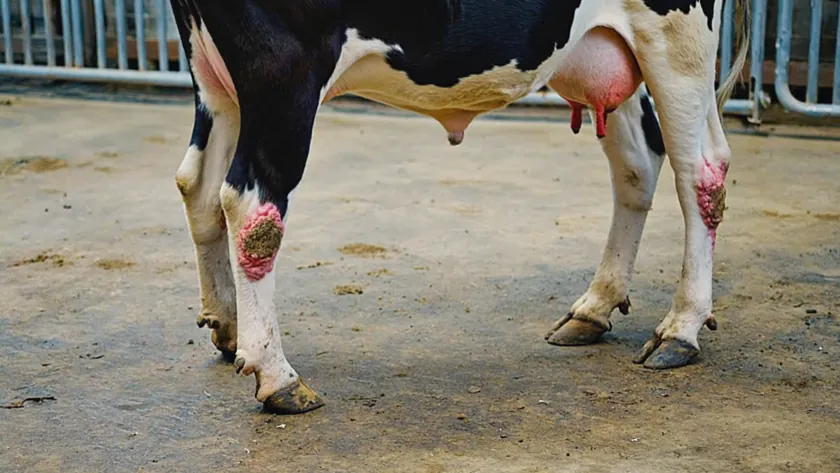
イメージ写真 乳牛の脚の関節周囲に腫れや膿瘍を考えるための構成場面。飼育・取り扱い上の問題を説明するために構成した場面。制作 Before We Eat。 原資料
44肉用鶏が処理場で長く待機する日本・2018年通知 ／ 行政調査
遠方からの集鳥や休日の人員確保の事情で、搬入後の滞留が長くなるとの回答を行政が公表。
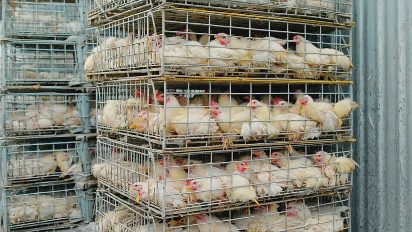
イメージ写真 羽を動かしにくい輸送容器で口を開いて呼吸する鶏。飼育・取り扱い上の問題を説明するために構成した場面。制作 Before We Eat。 原資料
45食鳥処理場への輸送・待機中の死亡日本・茨城県、平成26年度資料 ／ 行政調査
食肉衛生検査所が処理前に死亡した鶏を調査し、集荷、輸送、処理場、天候を検討。処理場による暑熱対策の違いも報告した。

イメージ写真 食鳥処理場への輸送・待機中の死亡を考えるための構成場面。飼育・取り扱い上の問題を説明するために構成した場面。制作 Before We Eat。 原資料
46牛などの暑熱による死亡・廃用日本 ／ 行政集計
農水省が夏の暑熱被害を年度・畜種別に集計している。死亡と廃用の区分、集計時点を確かめて読む。
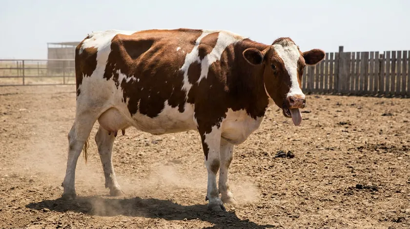
イメージ写真 日陰の乏しい場所で口を開け、暑熱の負担を受ける牛。飼育・取り扱い上の問題を説明するために構成した場面。制作 Before We Eat。 原資料
47水牛の子への初乳が遅れるインドの都市酪農場 ／ 農場調査
60戸を調べた研究が、生後早期の初乳給与や子牛の健康管理上の問題を記録。報告から個々の飼育者の動機は判断できない。
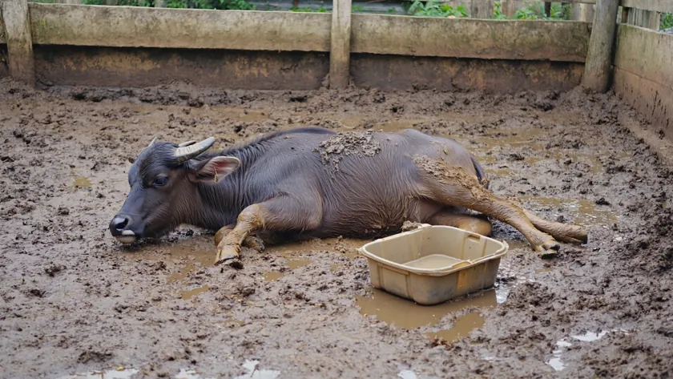
イメージ写真 湿った地面に横たわる弱った水牛の子。飼育・取り扱い上の問題を説明するために構成した場面。制作 Before We Eat。 原資料
48乳用牛の分娩時期をそろえるために出産を誘発するニュージーランド・過去の慣行 ／ 調査報告
季節繁殖の酪農で行われた、治療目的以外の定例の分娩誘起を記録。ニュージーランドでは2015年に業界方針が変わった。

イメージ写真 乳用牛の分娩時期をそろえるために出産を誘発するを考えるための構成場面。飼育・取り扱い上の問題を説明するために構成した場面。制作 Before We Eat。 原資料
49ベルジアン・ブルー種における計画的な帝王切開ベルギーの診療記録 ／ 臨床研究
筋肉の発達を強く選抜した系統で帝王切開が常用され、術後の合併症を追跡した研究がある。繁殖方針と、個体に必要な治療を分けて扱う。
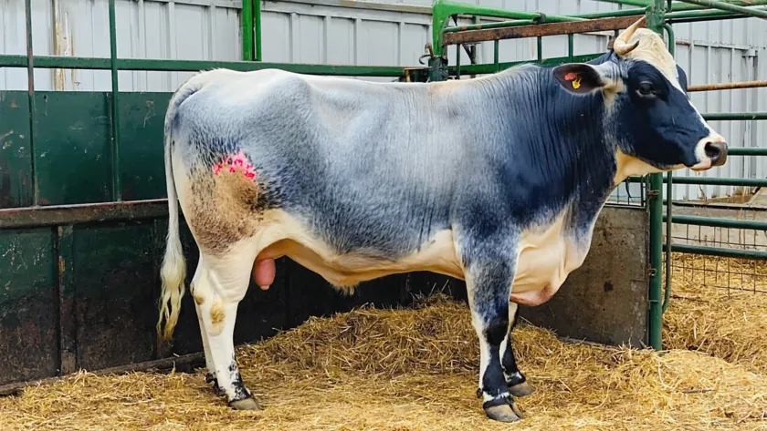
イメージ写真 外科的処置の跡が見える、体の筋肉が大きく発達した牛。飼育・取り扱い上の問題を説明するために構成した場面。制作 Before We Eat。 原資料
50乳牛の跛行米国の酪農場191戸 ／ 農場調査
調査員が歩き方や脚の状態を観察し、跛行、床や飼養管理との関連を評価。治療までの時間や予防策を取材する出発点になる。
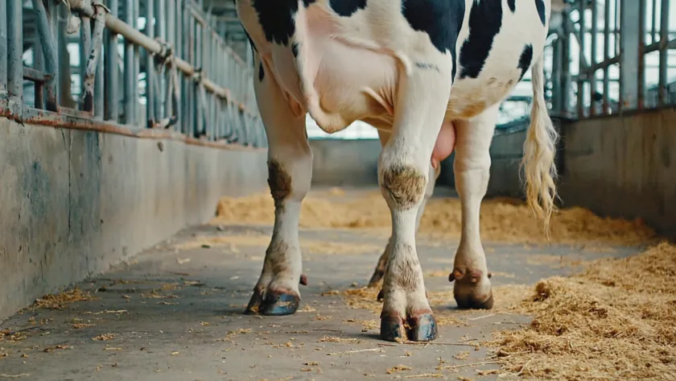
イメージ写真 乳牛の跛行を考えるための構成場面。飼育・取り扱い上の問題を説明するために構成した場面。制作 Before We Eat。 原資料
51多数の牛を泥の深い放牧地で飼養ニュージーランド・2025年公表 ／ 処分記録
サウスランドの事業者に48,750ニュージーランドドルの罰金。屋外でも、乾いて休める場所を実際に利用できるかが問題になった。
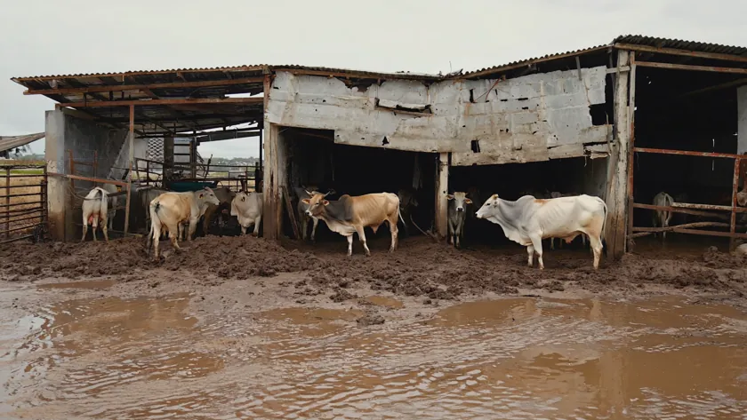
イメージ写真 乾いて休める場所がなく、深い泥に立つ牛。飼育・取り扱い上の問題を説明するために構成した場面。制作 Before We Eat。 原資料
母豚・子豚・出荷豚
52妊娠中の母豚に少量の濃厚飼料を与え、空腹が長引く欧州・2022年評価 ／ 科学評価
繁殖雌豚の体の状態を管理する定量給餌について、飼料のかさや繊維が少ない条件で強い採食欲求が続くことをEFSAが報告。
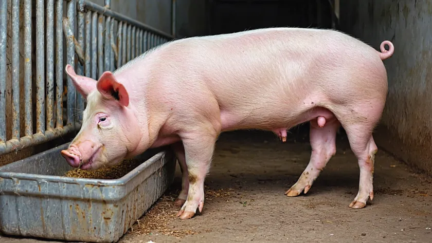
イメージ写真 妊娠中の母豚に少量の濃厚飼料を与え、空腹が長引くを考えるための構成場面。飼育・取り扱い上の問題を説明するために構成した場面。制作 Before We Eat。 原資料
53生後まもない子豚の圧死・飢餓死商業養豚場2戸・2022年報告 ／ 剖検研究
生後7日以内の死亡子豚106頭を剖検。生きて生まれた子豚の死因には、飢餓と圧死がそれぞれ23％含まれた。調査対象は死亡個体。

イメージ写真 生後まもない子豚の圧死・飢餓死を考えるための構成場面。飼育・取り扱い上の問題を説明するために構成した場面。制作 Before We Eat。 原資料
54繁殖を終えた母豚の肩の褥瘡デンマーク・12農場 ／ 出荷前診察
出荷前の母豚522頭を診察し、11％に肩の褥瘡があった。休む場所の床、体の状態、ケアを検討する材料になる。

イメージ写真 繁殖を終えた母豚の肩の褥瘡を考えるための構成場面。飼育・取り扱い上の問題を説明するために構成した場面。制作 Before We Eat。 原資料
55豚の尾かじりによる傷イタリア・オランダ・スペイン ／ 処理場調査
3か国で計15,000頭の画像を調べ、実際に尾の傷を確認。尾を切る処置の実施と、動物同士による負傷は別の事象。
研究の記録写真を見る（処理後のぶたの尾が写っています）

研究写真 食肉処理後のぶたの尾を、長さと形の異なる三つの例で比較した写真。出典 Romano ほか（2026年）図2 ／ CC BY 4.0。表示用に縮小・形式変換。 原資料
56出荷輸送で死亡した豚・自力で歩けなくなった豚米国・2012～2015年 ／ 処理場調査
20施設の調査が、到着時の死亡と歩行不能を別々に記録。どの個体にも同じ原因があったとはいえない。

イメージ写真 過密な車内で口を開け、一頭が倒れたぶた。飼育・取り扱い上の問題を説明するために構成した場面。制作 Before We Eat。 原資料
家きん、ウサギ、ヤギ、羊
57ふ化後、餌や水に初めて届くまでの遅れ欧州・2023年評価 ／ 科学評価
ふ化場から鶏舎までの工程によって初回の餌と水まで典型的に24～48時間を要する方式をEFSAが記述。早くふ化した個体ほど待ち時間が長くなりうる。

イメージ写真 ふ化後、餌や水に初めて届くまでの遅れを考えるための構成場面。飼育・取り扱い上の問題を説明するために構成した場面。制作 Before We Eat。 原資料
58採卵鶏の羽つつきによる羽毛や皮膚の損傷フランスの養鶏場 ／ 農場調査
放し飼いと設備を備えたケージの両方で調査。飼育方式の表示だけでは個々の群れの羽や皮膚の状態は読み取れない。

イメージ写真 採卵鶏の羽つつきによる羽毛や皮膚の損傷を考えるための構成場面。飼育・取り扱い上の問題を説明するために構成した場面。制作 Before We Eat。 原資料
59採卵鶏が一か所に密集し、圧迫・窒息して死亡商業採卵鶏群 ／ 調査研究
放し飼いの群れでも密集による死亡が記録されている。群れの動きや鶏舎の使われ方を含めて検討する。
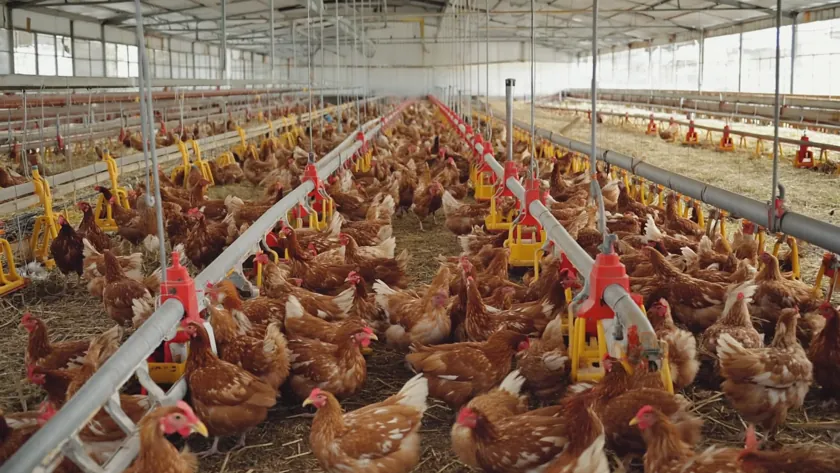
イメージ写真 採卵鶏が一か所に密集し、圧迫・窒息して死亡を考えるための構成場面。飼育・取り扱い上の問題を説明するために構成した場面。制作 Before We Eat。 原資料
60種鶏の交尾時に雌が負傷する肉用種鶏の繁殖農場 ／ 行動観察・病変調査
雄による攻撃的な交尾行動を観察し、死亡した雌15羽の外傷も記載した報告。単一農場の所見。
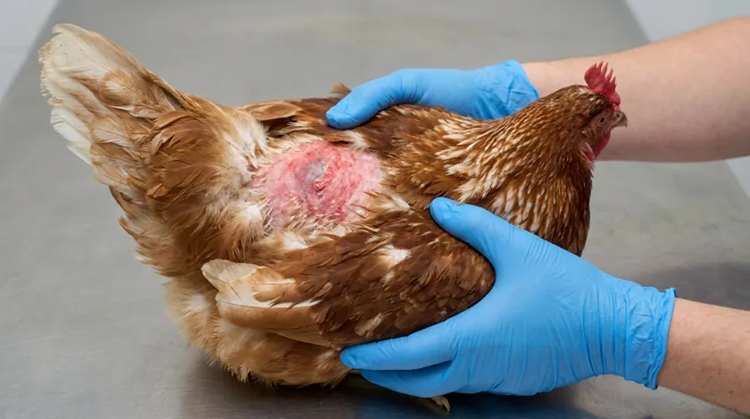
イメージ写真 種鶏の交尾時に雌が負傷するを考えるための構成場面。飼育・取り扱い上の問題を説明するために構成した場面。制作 Before We Eat。 原資料
61産卵を終えた鶏の捕鳥・取り扱い時の骨折英国・1989年報告 ／ 工程別調査
鶏・と体3,115羽を複数の工程で調査し、ケージからの取り出しや処理ラインへの懸鳥に伴う骨折を確認。飼養中の竜骨骨折とは区別する。
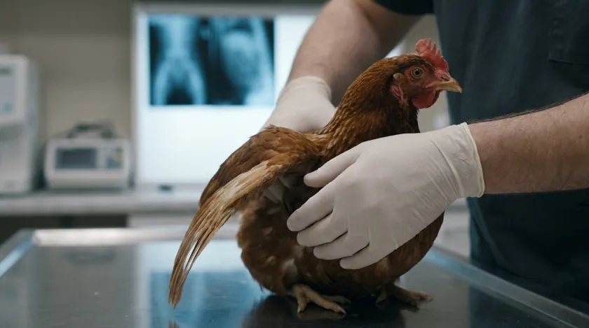
イメージ写真 産卵を終えた鶏の捕鳥・取り扱い時の骨折を考えるための構成場面。飼育・取り扱い上の問題を説明するために構成した場面。制作 Before We Eat。 原資料
62繁殖用アヒルの単飼ケージ欧州・2023年評価 ／ 科学評価
一部の繁殖用アヒルについて、1羽用の金網床のケージを使用する飼養体系を記録。移動や他の鳥との接触への制約を扱う。
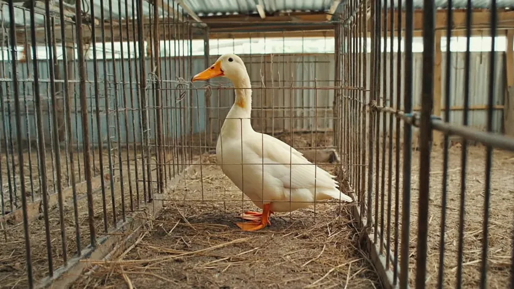
イメージ写真 翼を広げられず、水浴びもできない単飼のアヒル。飼育・取り扱い上の問題を説明するために構成した場面。制作 Before We Eat。 原資料
63七面鳥の繁殖での反復的な保定欧州・2026年評価 ／ 科学評価
人工授精に伴う雌雄の取り扱いが実際に行われ、保定のストレスや軟部組織の負傷などが論点になるとEFSAが報告。
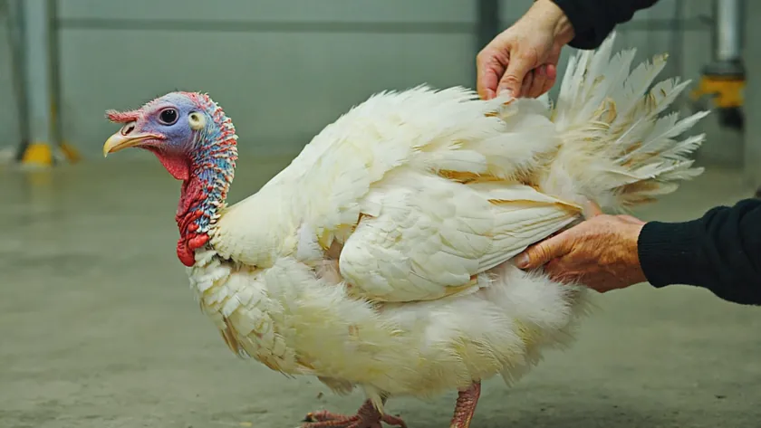
イメージ写真 七面鳥の繁殖での反復的な保定を考えるための構成場面。飼育・取り扱い上の問題を説明するために構成した場面。制作 Before We Eat。 原資料
64繁殖用ウサギの足裏の潰瘍スペイン・ポルトガル、2001～2012年 ／ 農場調査
664農場を訪問した調査で足裏の潰瘍を確認。足を休める板の普及と、足裏の状態との関係も調べている。

イメージ写真 ウサギの足裏に生じた、毛の抜けた赤い病変。飼育・取り扱い上の問題を説明するために構成した場面。制作 Before We Eat。 原資料
65肉用ウサギの離乳後の給餌制限フランスなど・2020年評価 ／ 科学評価
離乳後の消化器疾患に備えて一定期間、給与量を制限する生産体系を記載。健康管理の意図と空腹の負担をともに検討する。

イメージ写真 肉用ウサギの離乳後の給餌制限を考えるための構成場面。飼育・取り扱い上の問題を説明するために構成した場面。制作 Before We Eat。 原資料
66子ヤギの除角芽処置米国中西部・酪農場30戸の調査 ／ 農場調査
幼齢時に角芽を処置する農場と痛み止めの使用状況を記録。術後の経過や処置者の訓練を含めて読む。

イメージ写真 子ヤギの頭に残る除角芽処置の跡。飼育・取り扱い上の問題を説明するために構成した場面。制作 Before We Eat。 原資料
67子羊の断尾と去勢における痛みの管理オーストラリア ／ 業界調査
羊産業の調査が処置時の鎮痛の実施状況を報告。尻の皮膚を切除するミュールジングとは別の処置である。
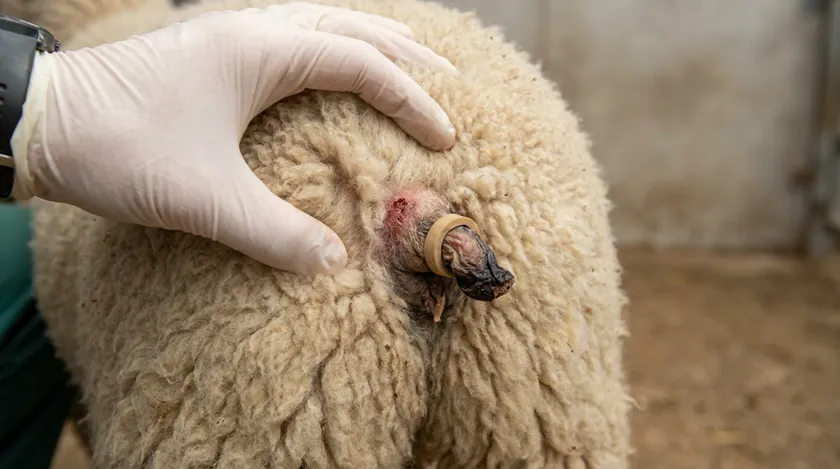
イメージ写真 身体を保定された、尾の短い子羊。飼育・取り扱い上の問題を説明するために構成した場面。制作 Before We Eat。 原資料
輸送、と畜、畜産副産物
68馬の生体航空輸送中の死亡・重傷カナダから日本への輸送 ／ 行政集計
カナダ食品検査庁が年度ごとに死亡・重傷を公表。集計対象は日本の空港で荷下ろしを終えるまでに報告された重大事故。

イメージ写真 狭い輸送用の囲いで動きを制限される馬。飼育・取り扱い上の問題を説明するために構成した場面。制作 Before We Eat。 原資料
69市場で脚を拘束されたラクダのけがカタール・2021年報告 ／ 市場調査
市場のヒトコブラクダについて、脚の拘束と負傷の関連を調査。観察された関連と個別の傷の原因を分けて読む。
市場の関連写真を見る（ラクダを持ち上げる場面）
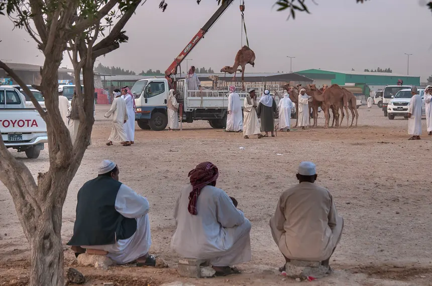
関連写真 カタールのアブ・ハムール卸売市場で持ち上げられるラクダ。出典 Alex Sergeev（Wikimedia Commons） ／ CC BY-SA 3.0。表示用に縮小・形式変換。 原資料
70家畜運搬船の転覆による羊の大量死ルーマニア・2019年 ／ 事故調査資料
Queen Hind号が出港時に転覆し、積まれていた羊の大半が死亡。欧州議会向けの調査が事故記録を検討した。
イメージ写真 港で大きく傾いた家畜運搬船。飼育・取り扱い上の問題を説明するために構成した場面。制作 Before We Eat。 原資料
71牛のと畜で最初の気絶処置が不十分スウェーデン・商業処理場の研究 ／ 現場観察
調査した牛の12.5％で最初の処置による気絶が不十分と評価された。再確認と是正が働いたかを問う事例。

イメージ写真 牛のと畜で最初の気絶処置が不十分を考えるための構成場面。飼育・取り扱い上の問題を説明するために構成した場面。制作 Before We Eat。 原資料
72生きた鶏が湯槽の工程に入った事案英国・2016年 ／ 裁判資料
異なる3日に発生した事実が最高裁資料に記載されている。最高裁の争点は法令の解釈で、個々の鶏の意識状態までを示す記録ではない。
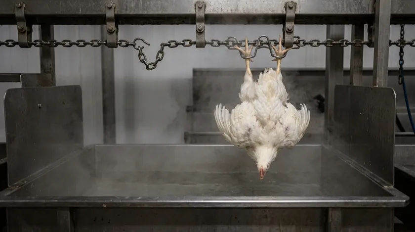
イメージ写真 生きた鶏が湯槽の工程に入った事案を考えるための構成場面。飼育・取り扱い上の問題を説明するために構成した場面。制作 Before We Eat。 原資料
73妊娠中の家畜がと畜される欧州の複数国・2017年評価 ／ 処理場調査の科学評価
処理場調査で妊娠牛・妊娠豚などの搬入を確認。妊娠時期や農場が事前に把握したかは個別に確かめる。欧州全域の実測率は不明。

イメージ写真 妊娠中の家畜がと畜されるを考えるための構成場面。飼育・取り扱い上の問題を説明するために構成した場面。制作 Before We Eat。 原資料
74毛刈りの際に羊を殴るなどの暴力オーストラリア・2017年報道 ／ 法廷報道
ビクトリア州の毛刈り作業者が虐待の罪を認めた事案。取材した裁判報道に基づく。羊毛生産に関わる個別事件。

イメージ写真 毛刈りのために仰向けで保定された羊と皮膚の擦り傷。飼育・取り扱い上の問題を説明するために構成した場面。制作 Before We Eat。 原資料
75生きたガチョウの羽毛採取で羽を引き抜く欧州・2010年評価 ／ 科学評価
自然に抜ける時期の羽を集める行為と、皮膚についた羽を抜き痛みを生じさせる行為を区別。EFSAは当時の商業条件で後者が生じると評価。

イメージ写真 胸の羽毛が抜け、保定されたガチョウ。飼育・取り扱い上の問題を説明するために構成した場面。制作 Before We Eat。 原資料

火災・自然災害・防疫・供給網の途絶
76豚舎火災で豚が死亡日本・鳥取県、2025年11月 ／ 事故・自治体記録
南部町の養豚場火災と死亡豚の処理を県議会で報告。出火原因や責任の判断はこの項目の記載範囲外。
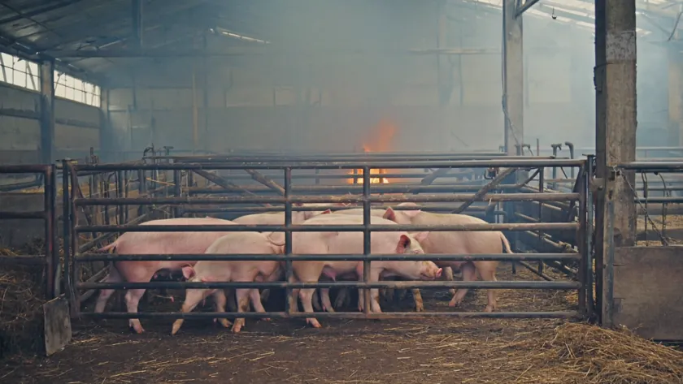
イメージ写真 煙が広がる豚舎で柵に閉じ込められたぶた。飼育・取り扱い上の問題を説明するために構成した場面。制作 Before We Eat。 原資料
77大雨による畜舎浸水・家きんの溺死日本・2010年等 ／ 災害・行政記録
農水省の災害記録に採卵鶏等の溺死がある。立地、避難や復旧を扱うための資料。
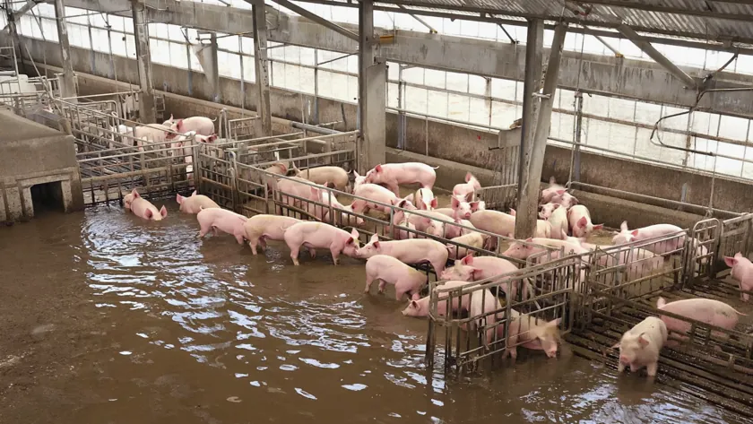
イメージ写真 浸水した豚舎で逃げ場が限られたぶた。飼育・取り扱い上の問題を説明するために構成した場面。制作 Before We Eat。 原資料
78鳥インフルエンザ発生農場での防疫殺処分日本・2022～23年シーズン ／ 防疫・行政集計
26道県84事例で約1,771万羽が殺処分の対象となったと農水省が公表。発生予防と防疫の判断を検討する。数値は対象羽数。
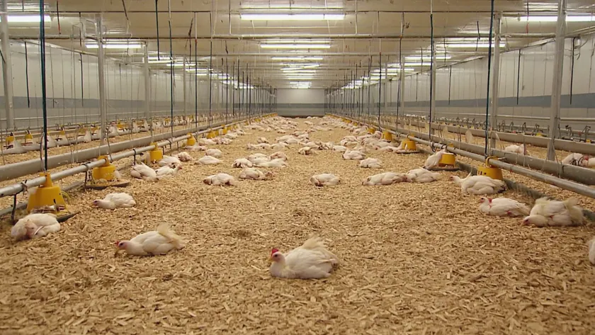
イメージ写真 防疫が問題となる鶏舎で、動かず横たわる鶏。飼育・取り扱い上の問題を説明するために構成した場面。制作 Before We Eat。 原資料
79処理場の休止と滞留による農場での殺処分米国ミネソタ州・2020年 ／ 供給網の途絶・行政資料
COVID-19流行時の処理場休止で出荷豚が滞留し、殺処分や死体処理への支援が必要になったと州が記録。
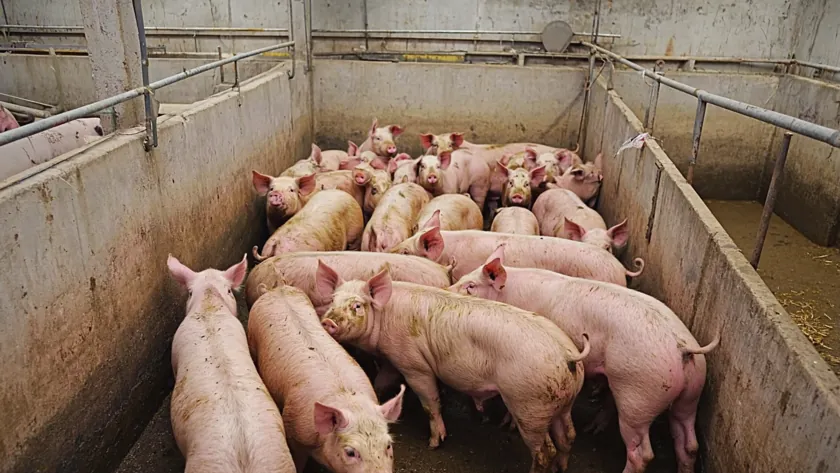
イメージ写真 探索する材料がなく、汚れた床に密集するぶた。飼育・取り扱い上の問題を説明するために構成した場面。制作 Before We Eat。 原資料